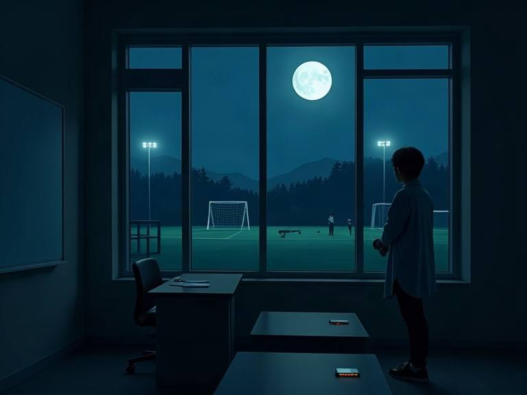

학관 3층 강의실. 눈을 뜨니 밤이다.
깜빡 잠이 든 줄 알았는데, 복도는 불이 꺼져 있고 창밖 운동장에는 느리게 움직이는 형체들이 있다.
폰은 배터리 9%, 신호 없음. 이 건물을 내려가 김수환관까지 가야 한다. 선택은 여섯 번. 고른 길마다 다른 밤이 된다.
여섯 번, 두 갈래. 어느 쪽이 머무는 선택인지는 끝나고 알 수 있습니다. 여섯 번의 합으로 생존 유형이, 여섯 번의 길로 결말이 정해집니다.
배터리 9%
1/6
망설이는 사이 기회가 지나갔다